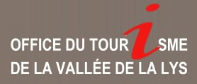
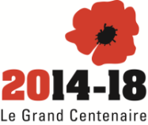

Pour se repérer
| Office du tourisme de la vallée de la Lys
Au pied des Monts de Flandre et à deux pas de la Métropole Lilloise, Merville, Neuf-Berquin, Nieppe, Sailly sur la Lys et Steenwerck s’étirent le long de la Lys. |
 |
| Tourisme-nord
Sortir en famille, flâner en ville, randonner, les incontournables. Le site idéal pour préparer son séjour. |
 |
Pour se cultiver
| Louvre Lens
Ce « deuxième Louvre » est situé à Lens dans le Pas-de-Calais. Il s'agit d'un établissement autonome, lié au musée du Louvre parisien par une convention scientifique et culturelle. Le musée est construit sur le site de l'ancienne fosse n°9 des mines de Lens. |
 |
| Ville de Bruges
Bruges est une ville de Belgique située en Région flamande, chef-lieu et plus grande ville de la province de Flandre-Occidentale. Elle est appelée « Venise du Nord » car elle possède de nombreux canaux qui encerclent ou traversent la ville. |
 |
| Musée de la vie rurale de Steenwerck
Ouvert au public depuis 1987, le Musée de la Vie Rurale présente aux nouvelles générations les activités de la ferme, les activités du village et les aménagements des habitations du début du 20ème siècle. Le Musée est le lieu idéal pour vos sorties en famille. Dans un cadre ludique et enrichissant, les anciens transmettent leur savoir aux plus jeunes. Rien ne manque : les machines agricoles, l'habitation, les artisans, les commerces, l'école. |
 |
| Chemin de mémoire 14-18
L’histoire de la Première Guerre mondiale ne peut se résumer qu’à une succession de batailles le long du Front. Loin des zones de combat, la population civile connaîtra soit la cohabitation avec les soldats alliés soit les dures règles de l’occupant. Le conflit terminé, les villes seront reconstruites en même temps que sont aménagés les lieux de mémoire. |
 |
Pour se restaurer
| Estaminet Chez Léon (Estaires)
Dans son nouvel établissement, l'Estaminet "Chez Léon", Benoit et son équipe vous proposent une cuisine du terroir, bien élaborée, toute en saveurs régionales et spécialités des Flandres. Vous y retrouverez une ambiance "typique Estaminet", familiale, chaleureuse et conviviale. |
 |
Pour s'amuser
| Carnaval de Dunkerque
On n'est pas spectateur au carnaval de Dunkerque puisqu'il n'est pas un "spectacle". On devient très vite acteur parmi des milliers d'autres acteurs : par un air de musique reconnu, par l'interpellation anonyme de carnavaleux chaleureux. "Chacun choisit sa voie pour accéder à la joie collective." Michel DELEBARRE |
 |